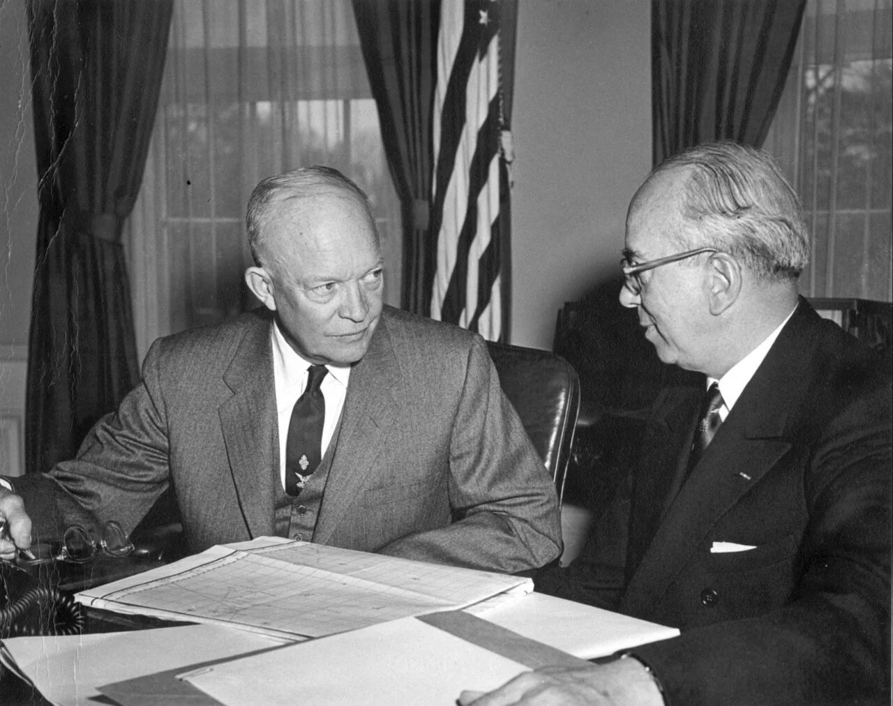
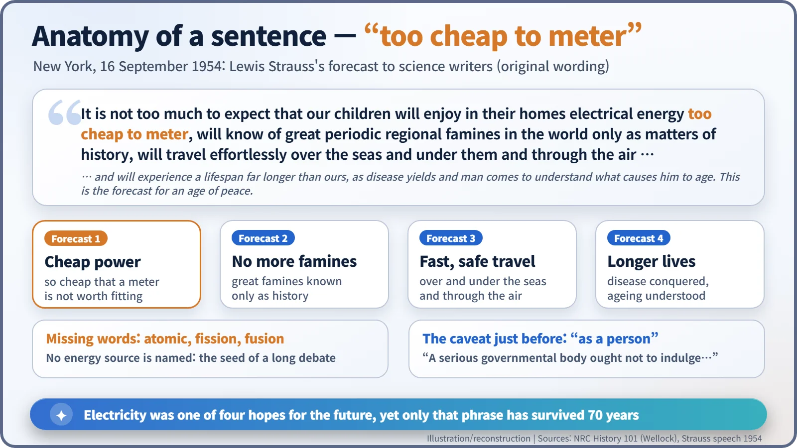
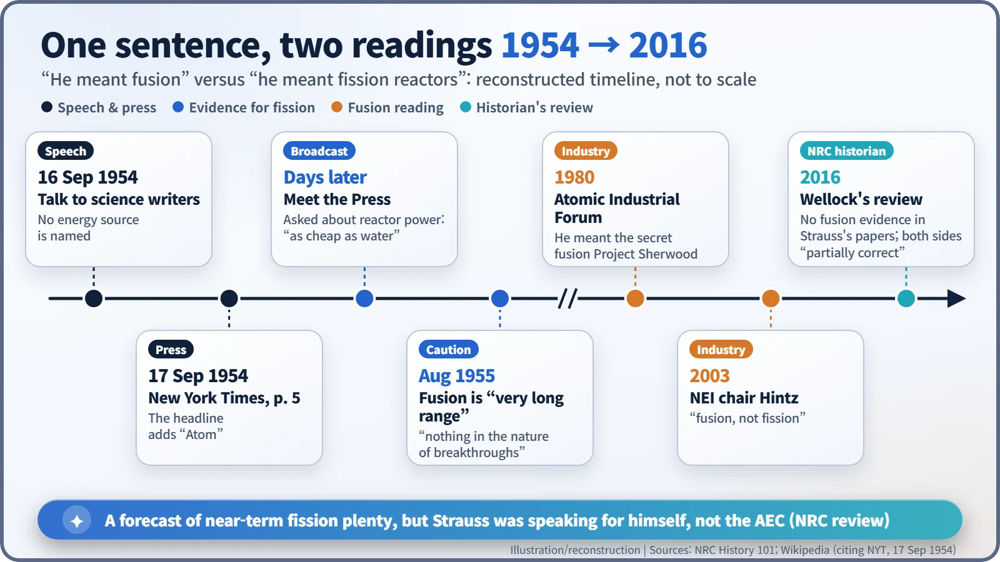

Nuclear History · 199
The Word Only the Headline Used — Lewis Strauss and "Too Cheap to Meter" (1954)
A personal toast to the future, spoken with an explicit caveat and naming no energy source, became the most quoted promise of the atomic age.
On 16 September 1954, AEC Chairman Lewis L. Strauss told science writers in New York that "our children will enjoy in their homes electrical energy too cheap to meter". The sentence named no energy source and came with an explicit "as a person" caveat, yet it became the most quoted promise of the atomic age. Decades later the industry said he meant fusion; the NRC's historian found that both readings are "partially correct".
The word only the headline used
On the morning of 17 September 1954, page 5 of The New York Times carried a confident headline: "Abundant Power from Atom Seen." The subhead went further: "It will be too cheap for our children to meter, Strauss tells science writers." Yet if you go back to the speech delivered the day before, something is odd. The famous sentence never mentions the atom. The four words "too cheap to meter", probably the most quoted phrase in the history of nuclear energy, were slightly out of focus from the very first day. [2]
Between an H-bomb briefing and cheap electricity
The speaker was Lewis L. Strauss (1896–1974), chairman of the U.S. Atomic Energy Commission (AEC), who had taken the oath of office on 2 July 1953. For him, 1954 was a year of extremes. On 30 March he briefed President Eisenhower at the White House on the hydrogen-bomb tests in the Pacific. On 30 August the president signed the revised Atomic Energy Act, which let private companies own reactors. On 6 September ground was broken at Shippingport, the first large U.S. nuclear power plant. Atomic energy was just acquiring a peaceful public face. [4]

Read the whole sentence
On 16 September in New York, Strauss addressed the National Association of Science Writers. He opened his forecast with a caveat: "A serious governmental body ought not to indulge in predictions. However, as a person, I suffer from no such inhibition and will venture a few predictions before I conclude." He then predicted that within 15 years science would bring the transmutation of elements, "unlimited power", tracer atoms that let researchers study living cells, and the secret of photosynthesis. Then came the line:
"It is not too much to expect that our children will enjoy in their homes electrical energy too cheap to meter, will know of great periodic regional famines in the world only as matters of history, will travel effortlessly over the seas and under them and through the air with a minimum of danger and at great speeds, and will experience a lifespan far longer than ours, as disease yields and man comes to understand what causes him to age. This is the forecast for an age of peace."

Cheap electricity was one of four hopes, listed alongside the end of famine, safe high-speed travel and longer lives. The sentence reads less like a sales pitch for nuclear plants than a toast to what science as a whole might give the next generation. And it names no energy source at all.
Would removing the meter really make power cheap?
"Too cheap to meter" does not mean free. It means electricity so cheap that measuring and billing each household would cost more than it is worth, so a flat charge makes more sense. A few days later Strauss went further on the radio programme Meet the Press. Asked about commercial power from atomic piles, he said his children and grandchildren would have power "too cheap to be metered, just as we have water today that's too cheap to be metered." That day, he added, might be "close at hand. I hope to live to see it." [1]
The people who actually sold electricity were not convinced. The president of the Cleveland Electric Illuminating Company called the phrase "a myth", because fuel was only a small part of a customer's bill. Even if fuel became almost free, the cost of building power stations and of running and maintaining the poles and wires would remain. The trade journal Electrical World called the idea a "delusion" and said utilities would be glad of more customers "with a meter in each and every one." Former AEC Commissioner James Ramey later summed it up: "Nobody took Strauss' statement very seriously." [1]
Fusion or fission?
Over the decades the phrase became a standard way to mock early nuclear optimism, and a counter-argument emerged. In 1980 the Atomic Industrial Forum (AIF) argued that Strauss had left the energy source unnamed on purpose, because he could not mention Project Sherwood, the AEC's then-secret fusion research programme. The AIF cited Strauss's son, former AEC staff and a Strauss biographer. In 2003 Donald Hintz, chairman of the Nuclear Energy Institute (NEI), repeated the view that the phrase referred to fusion, not fission. [1]

Thomas Wellock, historian at the U.S. Nuclear Regulatory Commission (NRC), went through Strauss's papers at the Herbert Hoover Presidential Library. He found no evidence that fusion was the hidden subject. The topics staff suggested for the speech were about fission reactors and civilian programmes: the new Atomic Energy Act, Atoms for Peace, Shippingport, declassification and medical isotopes. Strauss himself said in August 1955 that there had been "nothing in the nature of breakthroughs" in fusion and that it remained a "very long range" prospect. Wellock concluded that both camps were "partially correct": the phrase was a prediction of a fission utopia in the foreseeable future, but Strauss was "speaking for himself", not making an official AEC forecast. [1]
What four words left behind
The phrase spread largely thanks to William L. Laurence, the Pulitzer Prize-winning science reporter of The New York Times, who was in the room. He wrote that "all signs point to the realization within the next decade of a price for nuclear fuels so low" that only hydroelectric power could compete. A private man's toast to the future became, by way of the newspaper, "the promise of atomic power". [1]
The line left the nuclear world with a lasting lesson: listeners do not easily separate an individual's dream from an institution's promise. Strauss drew that line clearly at the start of his speech, but what survived was not his caveat. It was those four words.